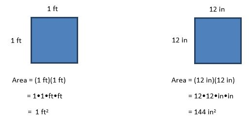

4. Use dimensional analysis to convert units, rates, and ratios from any given units to other units. Include conversions among and between U.S. and metric units using a variety of metric prefixes.
Introduction to Dimensional Analysis.
Most numbers used in the real world have units attached, which clarify what the number is referring to. Examples of units are gallons, dollars, meters, miles, and pounds. Some units are for geometric measurements such as area or volume. Many disciplines such as medicine or engineering have special units for use in their field.
This lesson will focus on a valuable strategy for converting from one set of units to another. This skill is called dimensional analysis.It is also known as unit analysis, unit-factor conversion, and the factor-label method.
The dimensional analysis strategy is based on three familiar ideas:
A fraction with equivalent expressions in the numerator and the denominator is equal to the number one. Examples:
When multiplying fractions, if a factor occurs in both the numerator and the denominator, it can be divided out. The common factor may be a number or a variable. Example:
The key to unit conversions with dimensional analysis is multiplying by the number one in the form of a conversion fraction. Conversion fractions are fractions with different units in the numerator and denominator but in which the value of the numerator equals the value of the denominator. Examples:
Since 3 feet is equal to 1 yard, the fraction \(\dfrac{3 \text{ feet}}{1 \text{ yard}}=1\text{.}\)
Since 1 hour equals 60 minutes, the fraction \(\dfrac{60 \text{ minutes}}{1 \text{ hour}}=1\text{.}\)
To use the dimensional analysis method:
Start with the original quantity and multiply it by the number 1 written as a conversion fraction of two units so that the units you don’t want can divide out of the numerator and denominator.
Example2.4.1.Convert 300 feet to yards.
Start with 300 feet
Multiply by a conversion fraction with feet in the denominator (so that the “feet” divides out of both numerator and denominator), and in the numerator you want to have yards
To create conversion fractions equal to 1, you must know which units are equivalent. The table on the below provides some unit equivalencies.
Subsection2.4.1Equivalences Table
Notice the structure of the table:
Units of the U.S. system are in the left column. Units of the Metric system are in the right column. The middle column shows some equivalencies between U.S. and metric units.
Different types of measurements are in different rows: Length, Area, Capacity or Volume, Weight or Mass.
When you want to find what a particular unit is equivalent to, you need to locate the unit in the correct row and column of the table.
In the conversion table above, you’ll notice that many of the units include prefixes like “milli” and “kilo”. While in English we use “millions”, “billions”, and “trillions” to represent large numbers, the metric system uses prefixes to indicate the size of a measurement. Like place values, these are based on powers of 10.
For example, a meter is the standard measurement of length in metric, so 1000 meters would be 1 kilometer. Likewise, 0.01 meters would be 1 centimeter (or, equivalently, 100 centimeters is 1 meter).
Table2.4.4.
Prefix
Symbol
Factor
\(\hspace{.2in}\)
Prefix
Symbol
Factor
Tera
t
1,000,000,000,000
Deci
d
0.1
Giga
g
1,000,000,000
Centi
c
0.01
Mega
m
1,000,000
Milli
m
0.001
Kilo
k
1,000
Micro
μ
0.000 001
Hecto
h
100
Nano
n
0.000 000 001
Deca
da
10
Pico
p
0.000 000 000 001
The most commonly used prefixes, and the ones you should try to remember, are kilo, centi, and milli.
Activity2.4.1.
In the US, we measure height in feet and inches. In other parts of the world, height is measured in meters. Use dimensional analysis to convert the height of a person who is 5 feet, 10 inches into meters.
In the US, we measure weight in pounds. In other parts of the world, weight is measured in kilograms. Use dimensional analysis to convert the weight of a person who is 180 pounds into kilograms.
A pesticide is supposed to be diluted in water at the rate of 2 pounds per gallon. Use dimensional analysis to convert this to ounces per quart.
Subsection2.4.3Rates
A ratio (that is, a fraction) that includes a unit in the numerator that is different from the unit in its denominator is typically called a “rate”. Rates show how one variable changes for each change in the second variable. For example, a rate of speed is \(\dfrac{35\text{ mi}}{\text{hr}}\) which can be read as 35 miles per hour.
The word “per” is the fraction line, the division bar. “Miles per hour” means miles divided by 1 hour. Some common rates are abbreviated:
“miles per hour” is often written as “mph”, and “miles per gallon” is often written as “mpg”.
When doing calculations with a rate, it should be written as a fraction.
Example2.4.5.Converting speed.
A bicycle is traveling at 12 miles per hour. What is the speed in feet per second?
Solution.
Start by writing the initial number as a fraction: \(\dfrac{12\text{ miles}}{1\text{ hour}}\)
We’ll use 5280 ft = 1 mile to convert miles to feet. To make this conversion, since “miles” is in the numerator of the original fraction, we’ll need to put it in the denominator of our conversion so the units will cancel:
Notice that the “miles” will cancel, and units left are ft/hour.
To convert the hours to seconds, we can use 1 hour = 60 minutes and 1 minute = 60 seconds. Since our original fraction has hours in the denominator, we’ll need to put hours in the numerator of our conversion so they’ll cancel. Likewise we’ll set up the next conversion so the minutes units will cancel. Then we multiply the numerators and multiply the denominators, canceling all the units that cancel, and we’re left with ft/sec:
Flow rate can be measured in cubic meters per hour. If a river flows at 200 cubic meters per hour, what is the flow rate in gallons per second?
Solution.
Start with 200 cubic meters per hour which can be written as\(\dfrac{200\text{ m}^3}{1\text{ hour}}\)
Then multiply by conversion fractions so that units you don’t want in the end will cancel. To form the conversion fractions find equivalent units for capacity or volume from the table.
Multiply numbers in the numerator, divide by numbers in the denominator. In your calculator enter 200 x 1000 / 0.946 / 4 / 60 / 60 enter.
Or, on a calculator that can display multiple operations at once, you could use parentheses and enter (200 * 1000) / (0.946 * 4 * 60 * 60)
Notice the 200 is not cubed (it is the unit m that is cubed).
Activity2.4.2.Texting While Driving.
Indiana state law says:
Except as provided in subsections (b) and (c), a person may not hold or use a telecommunications device while operating a moving motor vehicle.
(b) A telecommunications device may be used in conjunction with hands free or voice operated technology.
(c) A telecommunications device may be used or held to call 911 to report a bona fide emergency.
Is texting while driving actually a problem? A person might spend only 4 seconds to answer a text. How far would the car go in that time? It depends on the car’s speed.
Suppose a car is traveling at 35 miles per hour. Before calculating, give an educated guess for the distance, in feet, the car will travel in 4 seconds.
Suppose a car is traveling at 35 miles per hour. Use dimensional analysis to calculate the distance, in feet, the car will travel in 4 seconds.
If you are driving in Canada, following the posted speed limit of 80 km/hr, how many feet would you go during the 4 seconds spent texting?
Suppose the typical texting response time is between 2 seconds and 6 seconds. That could be written as a compound inequality for time t as:\(2\leq t \leq6\) seconds.
If a car is travelling at 35 mph, what is the typical distance a car would travel during a typical texting response?
Subsection2.4.4Using Dimensional Analysis for Area and Volume units
There are two methods of converting area and volume units:
Use conversion factor of square units (or cubic units for volume).
Use conversion factor of linear units, and square the conversion factor (or cube it for volume).
Example2.4.7.Convert 4 square feet to inches.
First write the question using symbols for the units: Convert 4 ft\(^2\) to in\(^2\text{.}\)
As with other unit conversions, we want to multiply 4 ft\(^2\) by a conversion fraction with ft2 in the denominator and in2 in the numerator. So we need to know how many ft\(^2\) equal how many in\(^2\text{.}\) You may not know this fact, which is fine because we can find it out from knowing the linear measurement equivalency that 1 ft = 12 in. We will use that to find the area unit equivalency by squaring each side of the equation:
These diagrams giving the geometric view of the algebra. Each of these is one square foot. Find the area by taking length times width.

Now we know the area unit equivalency that 1 ft\(^2\) = 144 in\(^2\text{.}\) We use that to create the conversion fraction and complete the unit conversion.
Example2.4.8.Convert 4 square feet to inches, again with the other method.
First re-write in symbols: Convert 4 ft\(^2\) to in\(^2\text{.}\)
We want to multiply 4 ft\(^2\) by a conversion fraction with ft\(^2\) in the denominator and in\(^2\) in the numerator. If we could find a conversion factor for feet in the denominator and inches in the numerator, then we could square that entire fraction so we’d end up with square units. The linear measurement equivalency that 1 ft = 12 in. So we’ll use square the fraction (12 in/1ft).
Example2.4.9.Convert 3,000,000 cubic centimeter to cubic meters..
First write the question using symbols for the units: Convert 4 ft\(^2\) to in\(^2\text{.}\)
We want to multiply 4 ft\(^2\) by a conversion fraction with ft\(^2\) in the denominator and in\(^2\) in the numerator. If we could find a conversion factor for feet in the denominator and inches in the numerator, then we could square that entire fraction so we’d end up with square units. The linear measurement equivalency that 1 ft = 12 in. So we’ll use square the fraction (12 in/1ft).
Example2.4.10.Convert 3,000,000 cubic centimeter to cubic meters, again with the other method.
First re-write in symbols: convert 3,000,000 cm\(^3\) to m\(^3\text{.}\)
Find a conversion fraction for cm in the denominator and m in the numerator, and then cube that fraction. We know 1 m = 100 cm, so use the conversion fraction (1m / 100 cm) and cube it.
While helping a friend remodel their house in Canada, you realize you brought your American tape measure. You measure the living room to be 12 feet wide and 14 feet 6 inches long.
To buy baseboard for the remodel, you need to know the length and width of the room in meters (since the local hardware store sells in meter lengths). Convert the width and length of the room to meters. You measure the width as 12 feet and the length as 14 ft and 6 inches.
Flooring is priced by the square meter. To determine how much carpet to buy for the living room, you need to know the area of the room. Find the area in square meters.
To buy an appropriately sized fan for the bathroom, you need to estimate the volume of the room. You measure the bathroom to be 8 ft wide, 10 ft long, with 8 ft tall ceilings. Determine the volume of the bathroom, in cubic meters.
We breathe about 10 liters of air each minute while being fairly still How many cubic feet of air do we breathe each hour?